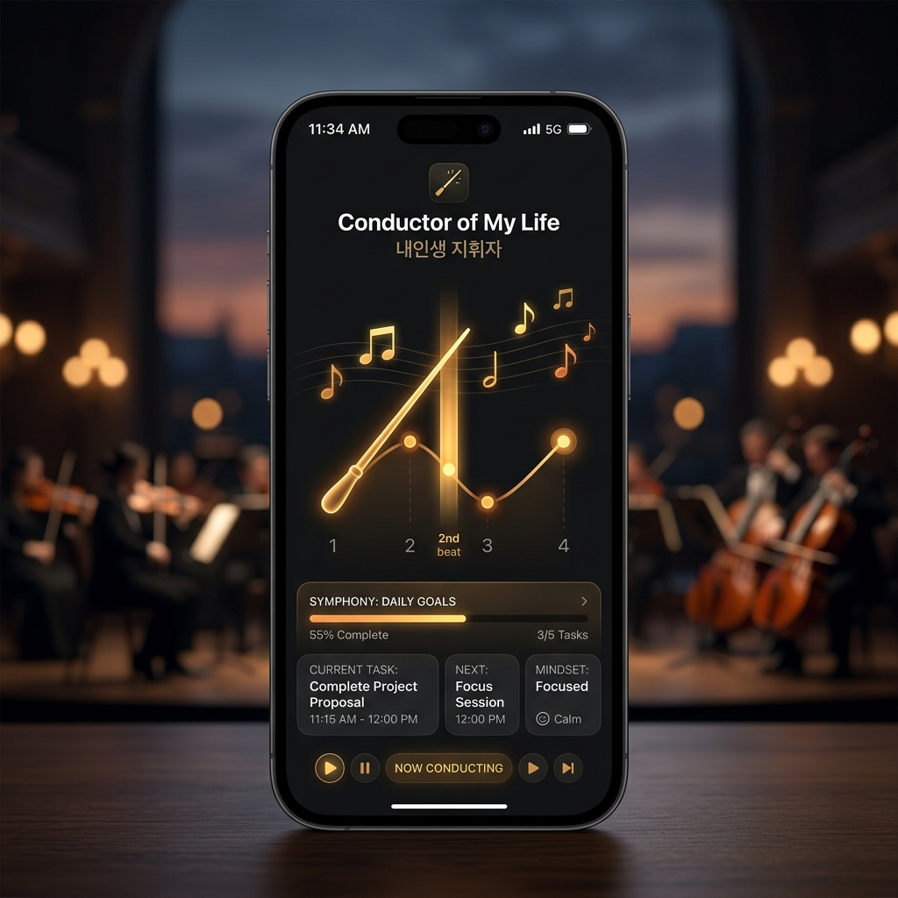

앱을 강제로 막는 대신, 클래식 오케스트라를 1분간 지휘하게 만들어 스마트폰의 주도권을 사용자 스스로 되찾게 하는 디지털 디톡스 서비스입니다.
잠깐의 지루함에도 손가락이 먼저 숏폼 아이콘을 누릅니다. 알고리즘은 멈출 지점을 주지 않고, 기존 차단 앱은 화면만 가려 반발심을 키웁니다.
목적 없이 앱을 켜는 습관 회로. 무엇을 보려 했는지도 모르는 채 피드가 시작됩니다.
일방적으로 막는 방식은 답답함을 유발하고, 결국 사용자가 차단을 스스로 해제합니다.
도파민 과부하는 시각 자극을 끊고 몸을 움직이는 인지 전환이 있어야 풀립니다.
차단은 통제이고, 지휘는 선택입니다. 앱을 여는 순간 오늘의 목표를 다시 묻고(소프트 개입), 클래식 비트에 맞춰 손을 움직이는 1분 미션으로 시각 중독 회로를 느슨하게 만듭니다. 미션이 끝나면 사용자는 스스로 “지금 볼 필요가 없다”는 판단에 도달합니다.

지휘 컨셉을 전면에 둔 앱 메인 · 클래식 5곡 · 2/4·3/4·4/4 박자
사용자는 상황에 따라 잠금 방식을 고르고, 잠금 중 SNS를 열면 언제나 같은 개입·미션 흐름을 만납니다.
지금 즉시 집중 시작. 대상 앱·잠금 시간(30분~6시간)·오늘의 목표를 정하면 바로 잠금이 걸립니다.
SNS 이용 시간(5~120분)을 먼저 쓰고, 종료 후 집중 잠금으로 자동 연결됩니다.
베토벤·차이콥스키·비제·비발디 실제 곡의 박자를 흔들기 동작으로 따라갑니다. 80% 이상 일치 시 통과.
미션 후 자각 질문에 답하고, 되찾은 집중 시간과 지휘자 랭크를 주간 리포트로 확인합니다.
실제 사용 맥락을 재현한 홈. 잠금 대상 앱만 개입 흐름으로 연결되고, 나머지는 그대로 열립니다.
차단 경고가 아니라 질문을 던집니다. 목표를 다시 보여주고 미션과 복귀 중 선택을 맡깁니다.
곡이 박자를 이끌고, 사용자는 흔들기 동작으로 따라갑니다. 진행률·정확도를 실시간 표시합니다.
앱·시간·목표를 한 화면에서 정합니다. 실행 중에는 시간과 목표가 잠기고 앱 선택만 열립니다.
미션 성공 직후 가장 판단이 맑은 순간에 선택을 묻습니다. 절제도, 연장도 데이터로 남습니다.
미션 성공·실패, 연장 횟수, 되찾은 시간을 주간 단위로 시각화해 절제를 성취로 바꿉니다.
| 차별 포인트 | 구현 방식 | 사용자에게 주는 효과 |
|---|---|---|
| 지휘라는 행위 | 실제 클래식 5곡의 BPM·박자 패턴을 흔들기 동작으로 따라가는 60초 미션 | 시각 자극에서 손·귀 감각으로 주의를 옮겨 스크롤 관성을 끊는다 |
| 측정되는 절제 | ±0.25초 판정, 80% 통과 기준, 실패 시 해당 잠금 재시도 불가 | 우연이 아닌 성취로 통과를 경험하고, 규칙이 가볍게 지켜진다 |
| 선택을 남기는 설계 | 미션 성공 후 ‘사용 안 하기 / 연장 사용’ 자각 질문과 기록 | 차단당한 기억이 아니라 스스로 멈춘 기억이 쌓인다 |
| 두 가지 잠금 문법 | 바로 잠금(A)과 활동 중 잠금(B)의 상호 배타 세션 모델 | SNS를 아예 끊는 사람과 정해두고 쓰는 사람 모두를 담는다 |
설치도 회원가입도 없이 소프트 잠금과 1분 지휘 미션을 바로 체험할 수 있습니다.